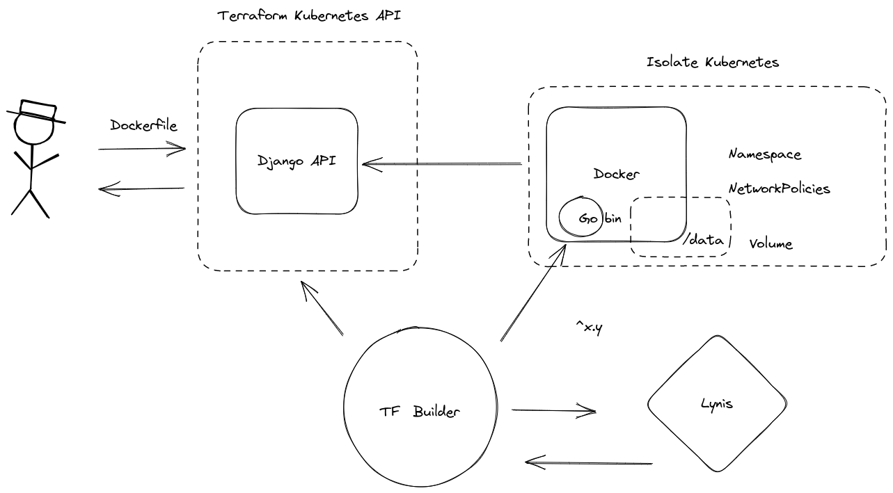

Owkin Technical test
Table of Contents
1. Instruction
Build a Restful API that let customer :
- submit Dockerfile and get a job id
- get status and performance if exists
Performance must be expressed as floating.
Once Dockerfile successfully uploaded :
- build the container
- scan for vulns
Depending of result :
- tag status as failed if vulns
- tag status as success if container was successfully build & run in isolated env
We would like container to write out his performance in `data/perf.json` which would be a volume mount point in `/data`.
Eg of Dockerfile :
FROM ubuntu:latest
# train machine learning model
# save performances
CMD echo ʻ{“perf”:0.99}ʼ > /data/perf.json
Time spent need to be ~4hours.
2. Conception

Figure 1: Owkin technical test architecture
Architecture will be divided in 5 parts.
- Restful API
- Terraform builder
- Kubernetes isolation
- First performace : Lynis
- Second performace : Building and saving
Solution will be hosted on a Kubernetes cluster, which in my case will be deployed on minikube.
As we are in a local dev env, we will have to build our custom CI/CD in order to build and deploy automatically our tests (Terraform Builder).
In order to isolate building container, we will use Namespace and NetworkPolicy.
Namespace for ressources :
In Kubernetes, namespaces provides a mechanism for isolating groups of resources within a single cluster.
NetworkPolicy for network isolation :
NetworkPolicies are an application-centric construct which allow you to specify how a pod is allowed to communicate with various network “entities” (we use the word “entity” here to avoid overloading the more common terms such as “endpoints” and “services”, which have specific Kubernetes connotations) over the network. NetworkPolicies apply to a connection with a pod on one or both ends, and are not relevant to other connections.
In order to build on demande K8s ressources from API I use a Terraform builder through a small Shell script.
2.1. Restful API
In order to deliver service quickly, I used Django and Django Ninja API.
For security reasons, Dockerfile will be passed as parameter as gzip base64.
Create you Dockerfile in the rootdir of the repository and run :
make base64
I’ve created a model that would allow to refer instances as following :
id: uuid4 name: string description: string dockerfile: string status: string performance: float
API will be described as :
{
"openapi": "3.0.2",
"info": {
"title": "NinjaAPI",
"version": "0.0.1",
"description": ""
},
"paths": {
"/api/v1/job": {
"post": {
"operationId": "api_api_create_status",
"summary": "Create Status",
"parameters": [],
"responses": {
"200": {
"description": "OK"
}
},
"requestBody": {
"content": {
"application/json": {
"schema": {
"$ref": "#/components/schemas/StatusIn"
}
}
},
"required": true
}
}
},
"/api/v1/job/{status_id}": {
"get": {
"operationId": "api_api_get_status",
"summary": "Get Status",
"parameters": [
{
"in": "path",
"name": "status_id",
"schema": {
"title": "Status Id",
"type": "string",
"format": "uuid"
},
"required": true
}
],
"responses": {
"200": {
"description": "OK",
"content": {
"application/json": {
"schema": {
"$ref": "#/components/schemas/StatusSchema"
}
}
}
}
}
},
"put": {
"operationId": "api_api_update_status",
"summary": "Update Status",
"parameters": [
{
"in": "path",
"name": "status_id",
"schema": {
"title": "Status Id",
"type": "string",
"format": "uuid"
},
"required": true
}
],
"responses": {
"200": {
"description": "OK"
}
},
"requestBody": {
"content": {
"application/json": {
"schema": {
"$ref": "#/components/schemas/StatusIn"
}
}
},
"required": true
}
},
"delete": {
"operationId": "api_api_delete_status",
"summary": "Delete Status",
"parameters": [
{
"in": "path",
"name": "status_id",
"schema": {
"title": "Status Id",
"type": "string",
"format": "uuid"
},
"required": true
}
],
"responses": {
"200": {
"description": "OK"
}
}
}
},
"/api/v1/jobs": {
"get": {
"operationId": "api_api_list_status",
"summary": "List Status",
"parameters": [],
"responses": {
"200": {
"description": "OK",
"content": {
"application/json": {
"schema": {
"title": "Response",
"type": "array",
"items": {
"$ref": "#/components/schemas/StatusSchema"
}
}
}
}
}
}
}
}
},
"components": {
"schemas": {
"StatusIn": {
"title": "StatusIn",
"type": "object",
"properties": {
"name": {
"title": "Name",
"type": "string"
},
"description": {
"title": "Description",
"type": "string"
},
"dockerfile": {
"title": "Dockerfile",
"type": "string"
}
},
"required": [
"name",
"description",
"dockerfile"
]
},
"StatusSchema": {
"title": "StatusSchema",
"type": "object",
"properties": {
"id": {
"title": "Id",
"type": "string",
"format": "uuid"
},
"name": {
"title": "Name",
"maxLength": 50,
"type": "string"
},
"description": {
"title": "Description",
"maxLength": 100,
"type": "string"
},
"dockerfile": {
"title": "Dockerfile",
"type": "string"
},
"status": {
"title": "Status",
"default": "init",
"maxLength": 10,
"type": "string"
},
"performance": {
"title": "Performance",
"type": "number"
}
},
"required": [
"name",
"dockerfile"
]
}
}
},
"servers": null
}
2.2. Terraform Builder
Terraform Builder is a Shell substitute to CI/CD.
It will perform, continuously, a check on list API to fetch latest non-init task pending.
Then, builder will clone a tf-templates definition, write and build Dockerfile from base64, sed templates vars and perform a terraform apply.
Before starting deployment, lynis scan will be perform to generate a first decimal result as performance.
Namespace and NetworkPolicies will be generated to embed submitted dockerfile.
3. Installation
3.1. Requirements
You will need :
- Docker daemon
- a kubernetes cluster with ingress module available
- terraform binary
- lynis
- curl
- jq
- gzip
- gnu-sed (Mac users)
3.2. Deploy locally
Set up the API.
eval $(minikube docker-env) docker build -f .docker/Dockerfile -t api-owkin .
cd terraform/ && terraform init && terraform apply
Verify your deployment :
kubectl get all -n api-dev NAME READY STATUS RESTARTS AGE pod/api-deployment-755bd487f-ggm49 1/1 Running 0 87s pod/api-deployment-755bd487f-j5mld 1/1 Running 0 87s pod/api-deployment-755bd487f-lc7tt 1/1 Running 0 87s NAME TYPE CLUSTER-IP EXTERNAL-IP PORT(S) AGE service/api-service ClusterIP 10.98.69.183 <none> 5000/TCP 83s NAME READY UP-TO-DATE AVAILABLE AGE deployment.apps/api-deployment 3/3 3 3 87s NAME DESIRED CURRENT READY AGE replicaset.apps/api-deployment-755bd487f 3 3 3 87s
Curl the API :
curl -LI -v http://192.168.49.2/api/v1/openapi.json
Initialize Builder :
chmod +x tf-builder/init.sh nohup tf-builder/init.sh > log.txt 2>&1 &
4. Usage
4.1. CRUD API
4.1.1. Create
curl -X POST -H "Content-Type: application/json" -d @payload.json http://192.168.42.2/api/v1/job {"id":"ac083da3-282d-4f20-8b65-37c3a52f39ab"}
Where payload.json :
{
"name": "My Dockerfile",
"description": "A docker file with dependencies and stuffs…",
"dockerfile": "H4sIAAAAAAAAA41TbWvbMBD+7l9xeKX9JCuh+xTIIGkcGpbFwXNaMgZFky+OiC1pspyu/fWT7OVlGYMYDPY99/Lcc3fTNPkC+s1ulRzcR/1+EMxH43gOFRPSuhfNMOTKoLRCQo4GbRgE8eIJluvsMVlMkkX2nM6yeLzO4odkEkP/DF0txqvpNE7jiTMHz0n6eTJLgdZmHzwkyzVE1ODPRhisXP46sr9sBwYfgBtkFqGp0QTpagGFUY1meQ7EANP6xQNwewvfA3CP//sDkuKEkwb6vV4PSO3y/hCSSlWqwjVC8rYQEA7hRPGd8xUVK7p64TGBJ1KIfWcGjaYSdS2UBKvgVZldLjpyfKteXdL0GDg4UmjLUKVtp1r2De7ixiiNdMmMqO/aeHQJ4MZhn4Ci5dSKCt+VRN8g05YUaIEoGPFWrMFgqgzH2XL/cWhN49jp3Gt1rXPhpEIgbyf5rggTsrasLH2YfXfl2CnaVB3rUnFWeuonqHSq1HIDtKkNrbfMIPV9CblR1Pf7v7hc7wpikCu5EUVjHNsNSCXdSro5c+tHcsni0AMvkckgWH2N07/muEe5b0fwNEuz1Wj+4r6HfjA0aiE/h+4O7oFUrTvcnPl2az3KHofhuZm6tRrceHvoqxxk6jK5g9Eoc5RcYN1WuAylWuiTtuQwHGe9xl0qwhnfInGL6Hf/8pqu6fuKttpbJaTd8uG/Kx5BFPwGuWTvU0cEAAA="
}
4.1.2. Get
curl -X GET -s http://192.168.49.2/api/v1/job/ac083da3-282d-4f20-8b65-37c3a52f39ab | jq . { "id": "ac083da3-282d-4f20-8b65-37c3a52f39ab", "name": "My Dockerfile", "description": "A docker file with dependencies and stuffs…", "dockerfile": "H4sIAAAAAAAAA41TbWvbMBD+7l9xeKX9JCuh+xTIIGkcGpbFwXNaMgZFky+OiC1pspyu/fWT7OVlGYMYDPY99/Lcc3fTNPkC+s1ulRzcR/1+EMxH43gOFRPSuhfNMOTKoLRCQo4GbRgE8eIJluvsMVlMkkX2nM6yeLzO4odkEkP/DF0txqvpNE7jiTMHz0n6eTJLgdZmHzwkyzVE1ODPRhisXP46sr9sBwYfgBtkFqGp0QTpagGFUY1meQ7EANP6xQNwewvfA3CP//sDkuKEkwb6vV4PSO3y/hCSSlWqwjVC8rYQEA7hRPGd8xUVK7p64TGBJ1KIfWcGjaYSdS2UBKvgVZldLjpyfKteXdL0GDg4UmjLUKVtp1r2De7ixiiNdMmMqO/aeHQJ4MZhn4Ci5dSKCt+VRN8g05YUaIEoGPFWrMFgqgzH2XL/cWhN49jp3Gt1rXPhpEIgbyf5rggTsrasLH2YfXfl2CnaVB3rUnFWeuonqHSq1HIDtKkNrbfMIPV9CblR1Pf7v7hc7wpikCu5EUVjHNsNSCXdSro5c+tHcsni0AMvkckgWH2N07/muEe5b0fwNEuz1Wj+4r6HfjA0aiE/h+4O7oFUrTvcnPl2az3KHofhuZm6tRrceHvoqxxk6jK5g9Eoc5RcYN1WuAylWuiTtuQwHGe9xl0qwhnfInGL6Hf/8pqu6fuKttpbJaTd8uG/Kx5BFPwGuWTvU0cEAAA=", "status": "init", "performance": null }
4.1.3. List
curl -s http://192.168.49.2/api/v1/jobs | jq . [ { "id": "ac083da3-282d-4f20-8b65-37c3a52f39ab", "name": "My Dockerfile", "description": "A docker file with dependencies and stuffs…", "dockerfile": "H4sIAAAAAAAAA41TbWvbMBD+7l9xeKX9JCuh+xTIIGkcGpbFwXNaMgZFky+OiC1pspyu/fWT7OVlGYMYDPY99/Lcc3fTNPkC+s1ulRzcR/1+EMxH43gOFRPSuhfNMOTKoLRCQo4GbRgE8eIJluvsMVlMkkX2nM6yeLzO4odkEkP/DF0txqvpNE7jiTMHz0n6eTJLgdZmHzwkyzVE1ODPRhisXP46sr9sBwYfgBtkFqGp0QTpagGFUY1meQ7EANP6xQNwewvfA3CP//sDkuKEkwb6vV4PSO3y/hCSSlWqwjVC8rYQEA7hRPGd8xUVK7p64TGBJ1KIfWcGjaYSdS2UBKvgVZldLjpyfKteXdL0GDg4UmjLUKVtp1r2De7ixiiNdMmMqO/aeHQJ4MZhn4Ci5dSKCt+VRN8g05YUaIEoGPFWrMFgqgzH2XL/cWhN49jp3Gt1rXPhpEIgbyf5rggTsrasLH2YfXfl2CnaVB3rUnFWeuonqHSq1HIDtKkNrbfMIPV9CblR1Pf7v7hc7wpikCu5EUVjHNsNSCXdSro5c+tHcsni0AMvkckgWH2N07/muEe5b0fwNEuz1Wj+4r6HfjA0aiE/h+4O7oFUrTvcnPl2az3KHofhuZm6tRrceHvoqxxk6jK5g9Eoc5RcYN1WuAylWuiTtuQwHGe9xl0qwhnfInGL6Hf/8pqu6fuKttpbJaTd8uG/Kx5BFPwGuWTvU0cEAAA=", "status": "init", "performance": null } ]
4.1.4. Update
curl -X PUT -s http://192.168.49.2/api/v1/job/ac083da3-282d-4f20-8b65-37c3a52f39ab -d @payload.json.sample {"success":true}
4.1.5. Delete
curl -X DELETE -s http://192.168.49.2/api/v1/job/ac083da3-282d-4f20-8b65-37c3a52f39ab {"success":true}
5. Why it’s not good or production ready
Within the small amount of time available to build this service, please consider the following points as NO GO :
- No SSL/TLS support
- No Kubernetes cluster IAM
- No Terraform backend configured for tfstate
- Ugly shell script to recreate a small CI/CD
- No code testing
- No Dockerfile linter checks
- No Password encryptions
- No retry on failed tasks
- No logs
- No production ready databases
- No checksums verifications
- No queue/bus system
- Lack of time obliged me to put some personal paths/IP
- Who starts script with nohup in 2022 ?
- Secrets in clear in the code (env file)
- etc